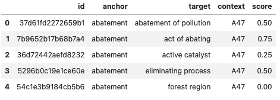
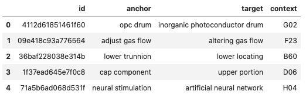
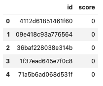
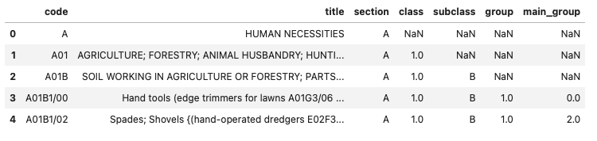

Working on the U.S. Patent Phrase to Phrase Matching Problem using Natural Language Processing (NLP) techniques to learn how to develop models that accurately match phrases based on semantic similarity.
In recent years, natural Language Processing (NLP) has been quit a transformitive force in the field of artificial intelligence, driving advancements in deep learning models that are bale to understand, interpret, and generate human language with high accuracy and sofistication.
Undoubtedly, classification stands out as one of the most practical and useful applications of NLP. Countless use cases exist for classification tasks, including:
Spam Email Detection: Classifying emails as either spam or non-spam (ham).
Sentiment Analysis: Classifying text documents (e.g., reviews, social media posts) as positive, negative, or neutral.
Topic Classification: Classifying news articles, research papers, or forum posts into predefined topics or categories (e.g., politics, sports, technology).
Legal Document Classification: Classifying legal documents based on their type (e.g., contracts, briefs, complaints).
Medical Document Classification: Classifying medical records or research papers into categories such as disease diagnosis, treatment plans, or medical history.
Another less obvious use case is the Kaggle U.S. Patent Phrase to Phrase Matching competition. Here, the task involves comparing two words or phrases and assigning a score based on their relevance to each other. A score of 1 indicates identical meaning, while 0 indicates completely different meanings. For example, abatement and eliminating process might have a score of 0.5, indicating they are somewhat similar but not identical.
Note that this scenario can be likened to a classification problem, where we question:
For the following text…: “TEXT1: abatement; TEXT2: eliminating process” …chose a category of meaning similarity: “Different; Similar; Identical”.
In this post, we will provide a step-by-step guide on solving the Patent Phrase Matching problem. We will approach this task as a classification problem, representing it in a manner similar to the example described above.
On Kaggle
Before we dive into the code, there are a few steps to follow. On the competition page, first accept the rules, then click on Code from the top menu, then select + New Notebook. You will see a cell with prewritten code, which you can delete as we will be writing all our code from scratch.
Next, on the right-hand sidebar, follow these steps:
Download the Models: We will be using two different models for this task (
debertav3baseanddebertav3small). Click on+ Add Input, then under the Datasets category, type in the names of these two models one by one and download them.
(Side note: You can also try
deberta-v3-largemodel later on, however, it requires more computing power and I personally do not recommend using it for the start)Download CPC Dataset: There is another dataset that we need to download. Follow the same steps as before and type
cpc-codesto obtain the new CSV file. We will explore the information contained in this dataset in later sections.
Turn on GPU: You will need GPUs for this task… Click on the three dots at the top right corner, then choose Accelerator, and select a GPU option.

Turn off the Internet: Finally, you need to work in offline mode as required by the competition organizer. Once all your files are downloaded, open the left-side window, select Session options, and turn off the internet connection. (screenshot)

Importing libraries and Set Required Seed
Now we are ready to start the exciting part. We’ll be using PyTorch and Transformers, along with Matplotlib for some exploratory data analysis (EDA).
import pandas as pd
import transformers
from transformers import AutoModelForSequenceClassification, AutoTokenizer
import torch
from torch import optim
from torch.utils.data import DataLoader, Dataset, random_split
from torchmetrics.regression import PearsonCorrCoef
import numpy as np
import random
import timeit
from tqdm import tqdm
from collections import Counter
import matplotlib.pyplot as plt
from operator import itemgetterAdditionally, we’ll use a seed to ensure that the random numbers generated are reproducible. Reproducibility is essential for controlling randomness in both CPU and GPU operations, ensuring deterministic behavior. This is crucial for debugging and for ensuring that experiments can be replicated exactly.
RANDOM_SEED = 42
#MODEL_PATH = '/kaggle/input/debertav3base'
MODEL_PATH = '/kaggle/input/debertav3small'
MAX_LENGTH = 256
BATCH_SIZE = 64
LEARNING_RATE = 2e-5
EPOCHS = 2
def set_random_seed(seed):
random.seed(seed)
np.random.seed(seed)
torch.manual_seed(seed)
torch.cuda.manual_seed_all(seed)
torch.backends.cudnn.deterministic = True
torch.backends.cudnn.benchmark = False
set_random_seed(RANDOM_SEED)
device = 'cuda' if torch.cuda.is_available() else 'cpu'The code below helps control the amount of logging output by focusing only on error messages, which can be particularly useful for cleaner logs and debugging.
Reading Datasets
Now, let’s read our files:
train_df = pd.read_csv('/kaggle/input/us-patent-phrase-to-phrase-matching/train.csv')
test_df = pd.read_csv('/kaggle/input/us-patent-phrase-to-phrase-matching/test.csv')
submission_df = pd.read_csv('/kaggle/input/us-patent-phrase-to-phrase-matching/sample_submission.csv')
patents_df = pd.read_csv('/kaggle/input/cpc-codes/titles.csv')EDA Warm Up
Let’s explore and extract some useful information from our datasets, first.

The above table tells us that the training set has five columns:
id - a unique identifier for a pair of phrases
anchor - the first phrase
target - the second phrase
context - the CPC classification, which indicates the subject within which the similarity is to be scored
score - the similarity. This is sourced from a combination of one or more manual expert ratings.
What else can we get?

Note that there are only 5 potential scores:
1.0 - Represents a very close match, typically indicating an exact match except for possible differences in conjugation, quantity (e.g., singular vs. plural), and the addition or removal of stopwords (e.g., “the,” “and,” “or”).
0.75 - Indicates a close synonym, such as “mobile phone” vs. “cellphone.” This also includes abbreviations, such as “TCP” -> “transmission control protocol.”
0.5 - Denotes synonyms that do not have the same meaning (same function, same properties). This category includes broad-narrow (hyponym) and narrow-broad (hypernym) matches.
0.25 - Indicates that the two phrases are somewhat related, such as being in the same high-level domain but not being synonyms. This category also includes antonyms.
0.0 - Represents phrases that are unrelated.
Now let’s have a closer look at the anchor column:
ax = train_df.groupby('anchor')['id'].count().sort_values(ascending=False).head(10).plot(kind='bar', color=list('gbymcr'))
for container in ax.containers:
ax.bar_label(container)
plt.title('Top 10 Anchors')
plt.show()
Here, we can see the top 10 mostly used anchors, respectively. The total number of entities containing each anchor is written on top of its bar.
The test dataset is quite similar to the train dataset, except that it does not have the score column.

And our submission file at the end should look like this:

The only dataset left is patents_df. But what information does it have inside? Let’s have a look.

Remember that earlier we suggested that we could represent the input to the model as something like “TEXT1: abatement; TEXT2: eliminating process”. We’ll need to apply that context here.
To begin, merge train_df and patent_df on the shared column: notice that train_df['context'] and patent_df['code'] contain similar information on both tables, so they’ll be the point of juncture.
next step, we will create a new column (input) on the new training dataset (updated_train_df). It combines updated_train_df['title'] and updated_train_df['anchor'].
updated_train_df = train_df.merge(patents_df, left_on='context', right_on='code')
updated_train_df['input'] = updated_train_df['title'] + "; " + updated_train_df['anchor']
updated_train_df.tail()
Do the same steps for test_df:
Tokenization
Now it’s time to tokenize our datasets… But what is it exactly?
Tokenization, in the realm of Natural Language Processing (NLP) and machine learning, refers to the process of converting a sequence of text into smaller parts, known as tokens.
In other words, we can’t pass the texts directly into a model. A deep learning model expects numbers as inputs, not English sentences! So we need to do two things:
Tokenization: Split each text up into tokens
Numericalization: Convert each token into a number.
The details about how this is done depend on the particular model we choose. There are numerous models available, but for the starting point we will be using the two models that we have downloaded earlier.
tokenizer = AutoTokenizer.from_pretrained(MODEL_PATH)
model = AutoModelForSequenceClassification.from_pretrained(MODEL_PATH, num_labels=1).to(device)The num_labels=1 basically turns it into a regression problem, as to output only one score.
You can safely ignore the warnings here.
Loading Data
In the following cells we will build our custom dataset classes for training and testing that inherit from torch.utils.data.Dataset.
class TrainDataset(Dataset):
def __init__(self, inputs, targets, scores, tokenizer):
self.scores = scores
self.encodings = tokenizer(inputs,
targets,
padding=True,
truncation=True,
max_length=MAX_LENGTH)
def __getitem__(self, idx):
out_dic = {key: torch.tensor(val[idx]) for key, val in self.encodings.items()}
out_dic['scores'] = self.scores[idx]
return out_dic
def __len__(self):
return len(self.scores)class SubmitDataset(Dataset):
def __init__(self, inputs, targets, ids, tokenizer):
self.ids = ids
self.encodings = tokenizer(inputs,
targets,
padding=True,
truncation=True,
max_length=MAX_LENGTH)
def __getitem__(self, idx):
out_dic = {key: torch.tensor(val[idx]) for key, val in self.encodings.items()}
out_dic['ids'] = self.ids[idx]
return out_dic
def __len__(self):
return len(self.ids)Taking TrainDataset for instance, let’s break it down into sections and see what it entails:
Initialization (
__init__method):Parameters:
inputs: The input texts to be tokenized.targets: The target texts or labels to be tokenized.scores: A list or array of scores corresponding to the inputs and targets.tokenizer: A tokenizer object (such as one from the Hugging Face Transformers library).
Attributes:
self.scores: Stores the scores parameter for later use in__getitem__.self.encodings: Stores the tokenized inputs and targets. The tokenizer processes the inputs and targets, applying padding, truncation, and limiting the length toMAX_LENGTH.
Getting an Item (
__getitem__method):Parameters:
idx: The index of the item to retrieve.
Functionality:
Creates a dictionary
out_dicwhere each key-value pair fromself.encodingsis converted into a tensor. The value at index idx for each key is taken.Adds the score at index idx from
self.scorestoout_dic.Returns
out_dic, which now contains the tokenized input and target data for the given index, along with the corresponding score.
Length of Dataset (
__len__method):- Returns the length of the dataset, which is determined by the number of scores. This assumes that the length of
scorescorresponds to the number of data points in the dataset.
- Returns the length of the dataset, which is determined by the number of scores. This assumes that the length of
After tokenizing, let’s check our datasets:
dataset = TrainDataset(updated_train_df['input'].to_list(),
updated_train_df['target'].to_list(),
updated_train_df['score'].to_list(),
tokenizer)
test_dataset = SubmitDataset(updated_test_df['input'].to_list(),
updated_test_df['target'].to_list(),
updated_test_df['id'].to_list(),
tokenizer)
There it is! Every input/output entity turned into a token and then into a number.
Now we split our data into train and validation sets.
generator = torch.Generator().manual_seed(RANDOM_SEED)
train_dataset, val_dataset = random_split(dataset, [0.8, 0.2], generator=generator)We use DataLoader after having our datasets to efficiently load and process the data in batches during training, validation, and testing of machine learning models. Therefore, it is easier to handle large datasets that don’t fit into memory all at once. It also provides additional functionalities like shuffling and batching, which are essential for training machine learning models effectively.
(Tip: Always shuffle=True on the training set and shuffle=False on the validation set and test set. [source])
Training the Model
Now it’s time to train our model. Notice that I am using /kaggle/input/debertav3small (let’s call it Model 1) as the model path. We will go ahead with training this model first, then we can change the path to /kaggle/input/debertav3base (we refer to this as Model 2) and compare the results.
Below we train our model using the AdamW optimizer and evaluate it on the validation dataset. We then compute the Pearson correlation coefficient between the predicted scores and the ground truth scores.
Optimization Initialization:
- Initialize the AdamW optimizer, which is a variant of the Adam optimizer with weight decay (W stands for weight decay).
PearsonCorrCoef Initialization:
- Initialize an object of the
PearsonCorrCoefclass.
The Pearson correlation coefficient (r) is a number between –1 and 1 that measures the strength and direction of the relationship between two variables. When one variable changes, the other variable changes in the same direction.
- Initialize an object of the
Training Loop:
- Iterate over the specified number of epochs (EPOCHS).
- For each epoch:
- Set the model to training mode (model.train()).
- Iterate over batches of data in the training dataset (train_dataloader).
- Move input data and targets to the device (e.g., GPU).
- Compute the model outputs and loss.
- Compute gradients and performs a parameter update (optimizer step).
- Accumulate the training loss.
- Compute the average training loss for the epoch.
- Set the model to evaluation mode (model.eval()).
- Iterate over batches of data in the validation dataset (val_dataloader).
- Compute the model outputs without gradient computation (since no training is performed).
- Accumulate the validation loss.
- Extend preds and golds lists with predicted scores and ground truth scores, respectively.
- Compute the average validation loss for the epoch.
- Compute and print the Pearson correlation coefficient between predicted scores (preds) and ground truth scores (golds).
(Side note: outputs[‘logits’].squeeze() would return the logits with any singleton dimensions removed, converting them into a 1D array if they were originally a 2D array with a singleton dimension.)
Timing and Printing:
- Compute and prints the training time.
optimizer = optim.AdamW(model.parameters(), lr=LEARNING_RATE)
pearson = PearsonCorrCoef()
start = timeit.default_timer()
for epoch in tqdm(range(EPOCHS), position=0, leave=True):
model.train()
train_running_loss = 0
for idx, sample in enumerate(tqdm(train_dataloader, position=0, leave=True)):
input_ids = sample['input_ids'].to(device) # text1
attention_mask = sample['attention_mask'].to(device) # text2
targets = sample['scores'].to(device) # relativeness
outputs = model(input_ids=input_ids,
attention_mask=attention_mask,
labels=targets)
loss = outputs.loss
optimizer.zero_grad()
loss.backward()
optimizer.step()
train_running_loss += loss.item()
train_loss = train_running_loss / (idx + 1)
model.eval()
val_running_loss = 0
preds = []
golds = []
with torch.no_grad():
for idx, sample in enumerate(tqdm(val_dataloader, position=0, leave=True)):
input_ids = sample['input_ids'].to(device)
attention_mask = sample['attention_mask'].to(device)
targets = sample['scores'].to(device)
outputs = model(input_ids=input_ids,
attention_mask=attention_mask,
labels=targets)
preds.extend([float(i) for i in outputs['logits'].squeeze()])
golds.extend([float(i) for i in targets])
val_running_loss += outputs.loss.item()
val_loss = val_running_loss / (idx + 1)
# printing out results
print('-' * 30)
print(f'Pearson Score: {float(pearson(torch.tensor(preds), torch.tensor(golds))):.3f}')
print(f'Train Loss EPOCH {epoch+1}: {train_loss:.3f}')
print(f'Valid Loss EPOCH {epoch+1}: {val_loss:.3f}')
print('-' * 30)
stop = timeit.default_timer()
print(f'Training Time: {stop-start: .2f}s')Let’s compare the performance of Model 1 (left side) and Model 2 (right side).

As you can see, Model 2 is more accurate than Model 1. It performs 4.6% better on the first epoch and 2.8% better on the second epoch. The training and validation loss of Model 2 is almost half of Model 1.
However, the accuracy comes with the price of consumed time. Model 2 takes a bit over double the time of Model 1 to train. So, to conclude:
Model 1 is faster and less accurate
Model 2 is slower and more accurate
What other models can we use to improve the performance up to 90% or even more? Perhaps one option would be to use Microsoft’s DEBERa-v3-large. What other suggestions you might have?
Clear the Memory
We are close to the end. Make sure to free up your memory at this point.
Testing the Model
preds = []
ids = []
model.eval()
with torch.no_grad():
for idx, sample in enumerate(tqdm(test_dataloader)):
input_ids = sample['input_ids'].to(device)
attention_mask = sample['attention_mask'].to(device)
ids.extend(sample["ids"])
outputs = model(input_ids=input_ids, attention_mask=attention_mask)
preds.extend([float(i) for i in outputs["logits"].squeeze()])Submission
Congratulations on making it this far! Your code is now ready to be submitted. Save your predicted scores in a .csv file and submit the results. Kaggle will use a hidden testing dataset to evaluate your model. You will then be able to see how well your model performs on these unseen datasets.
submission_df = pd.DataFrame(list(zip(ids, preds)),
columns =["id", "score"])
submission_df.to_csv("submission.csv", index=False)
submission_df.head()Thank you for sticking with me up to this point. This has been my first time working on an NLP case competition, and it’s also my first time writing about it. I hope it provided some value to you. Let’s continue practicing and improving together!
To access my complete code for this Kaggle competition, click here.